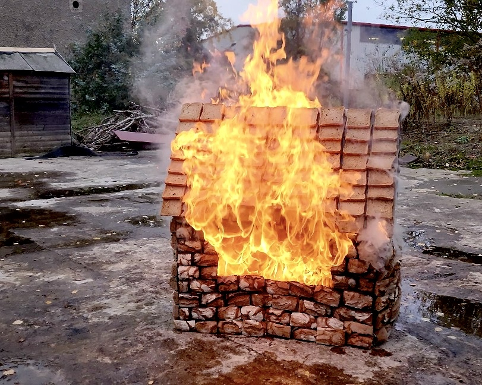
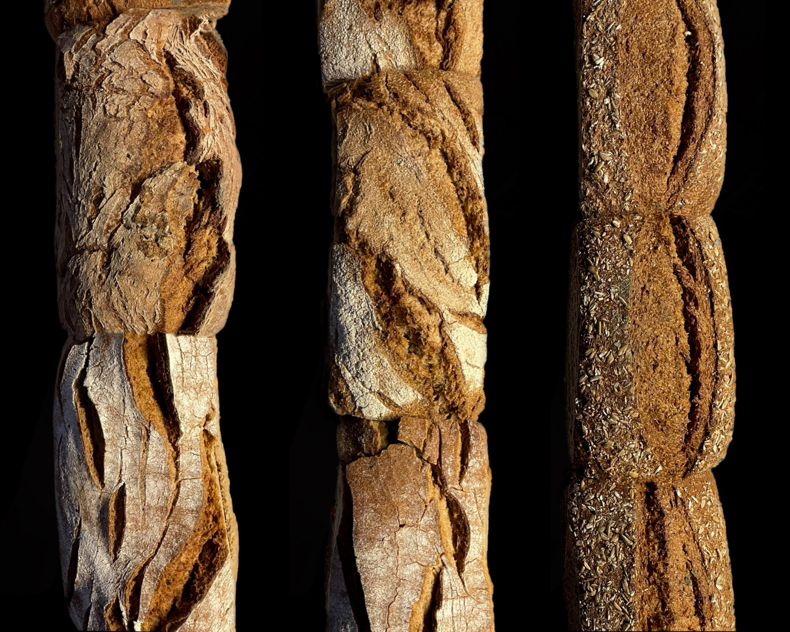
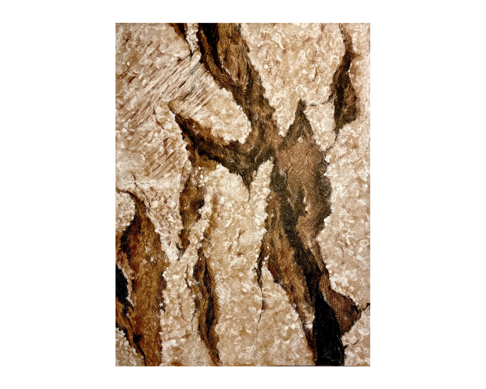
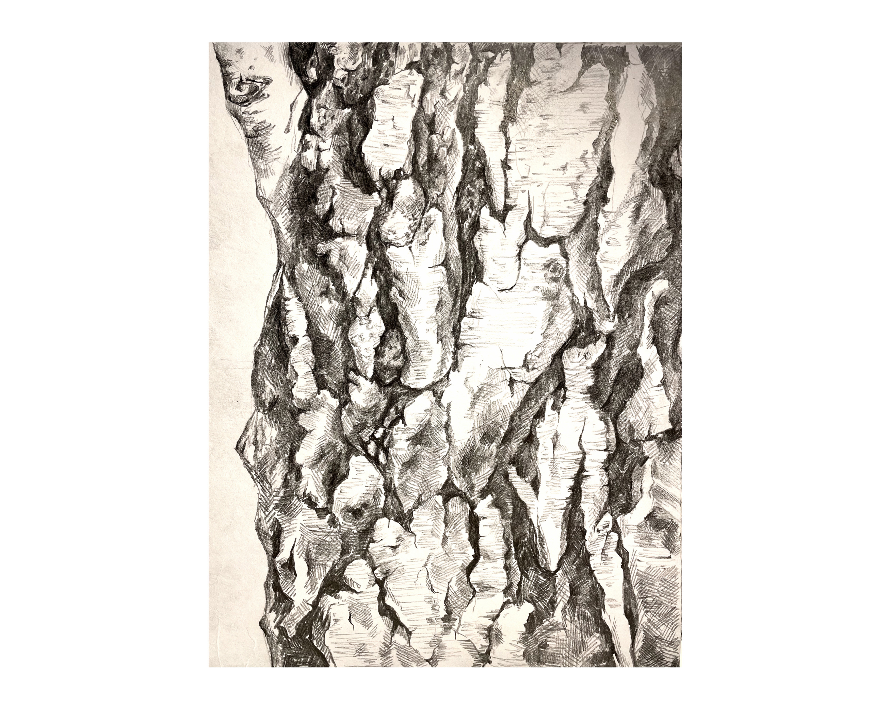
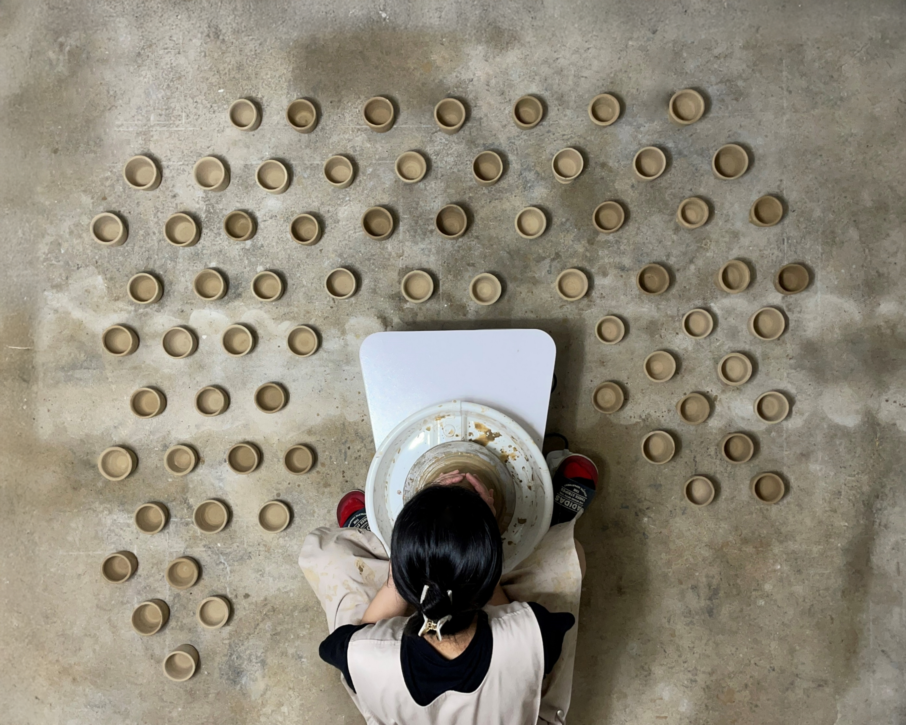
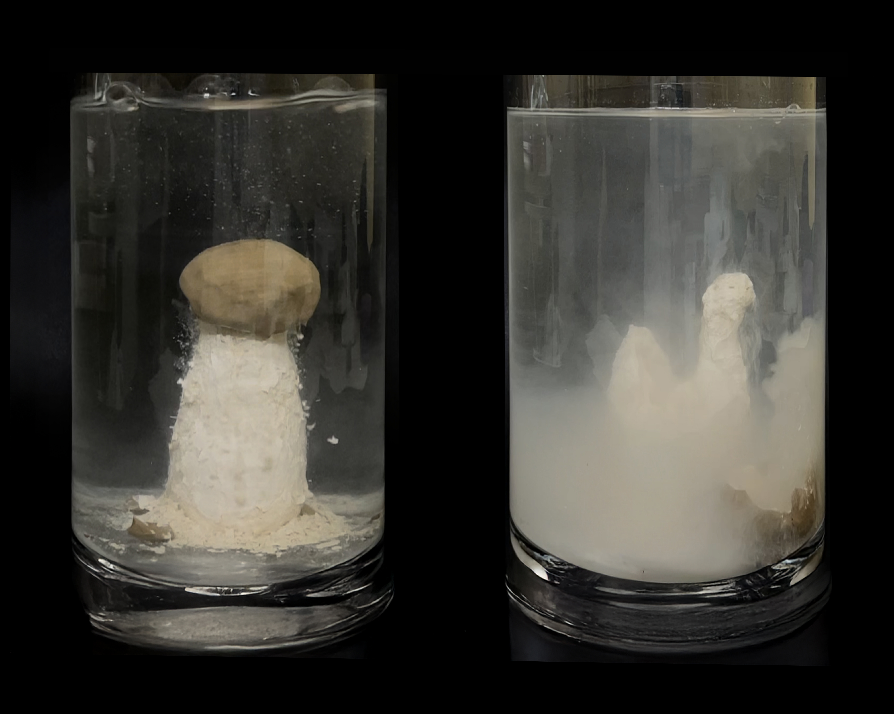
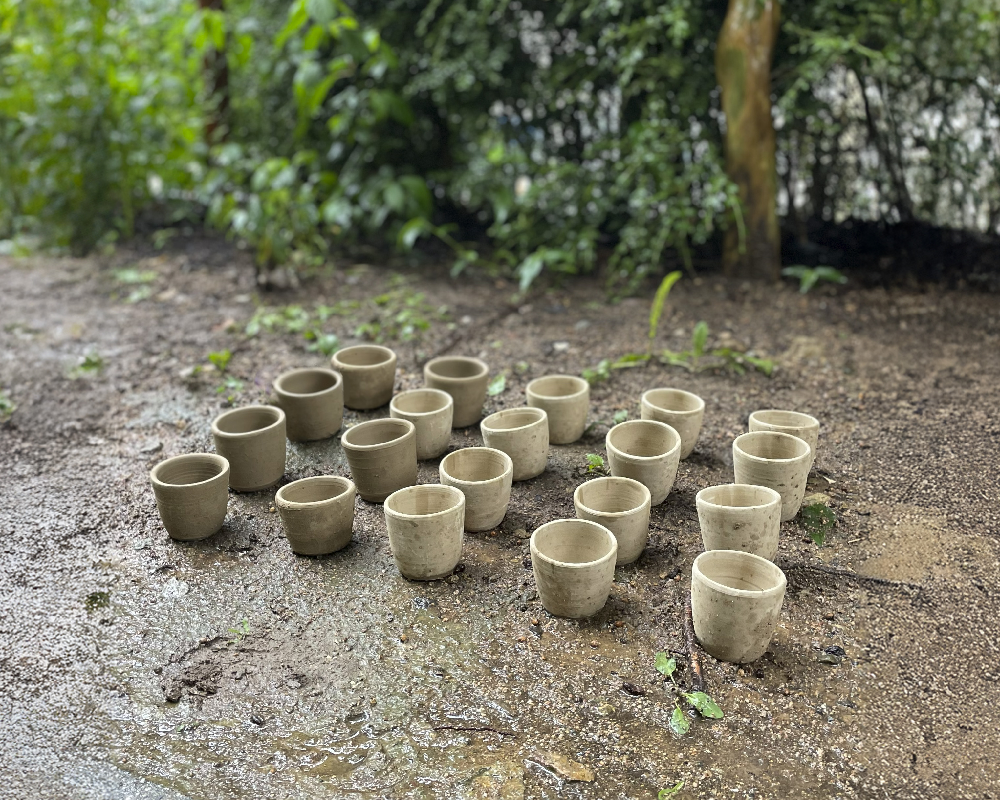

Tontauben: The Material State After Collapse Ⅰ

Tontauben: The Material State After Collapse Ⅱ

Tontauben: The Material State After Collapse Ⅲ

Arrangement of Silent Fragments

Bae-baeng-i-gut (배뱅이굿)

After What Remains

The Second Hearth

Towards Grain (나뭇결을 향하여)

The Grammar of a Shared Surface I

The Grammar of a Shared Surface II

Chai Wala

Second Law-of Thermodynamics

Chai, After